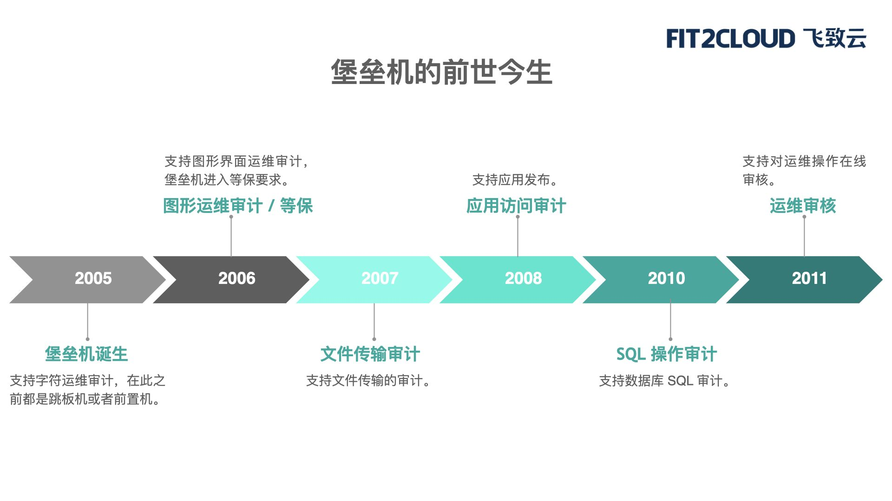
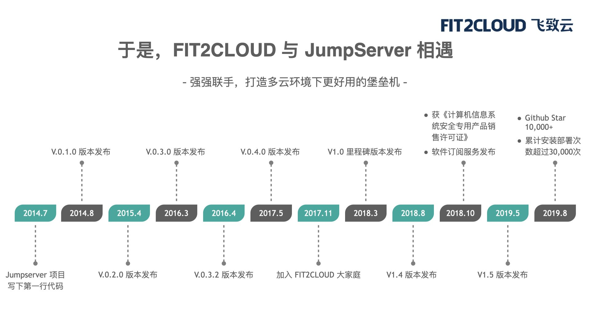
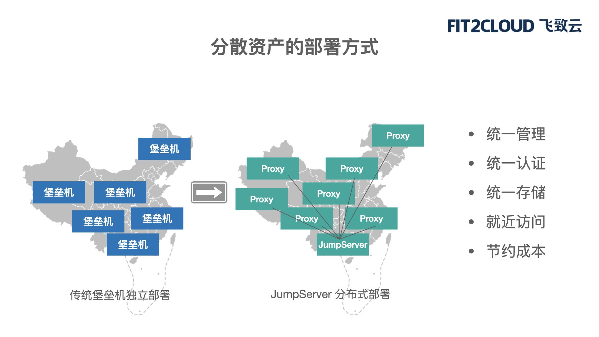
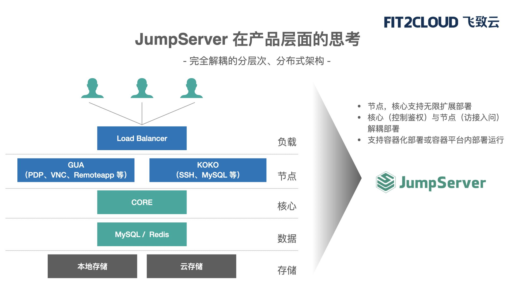
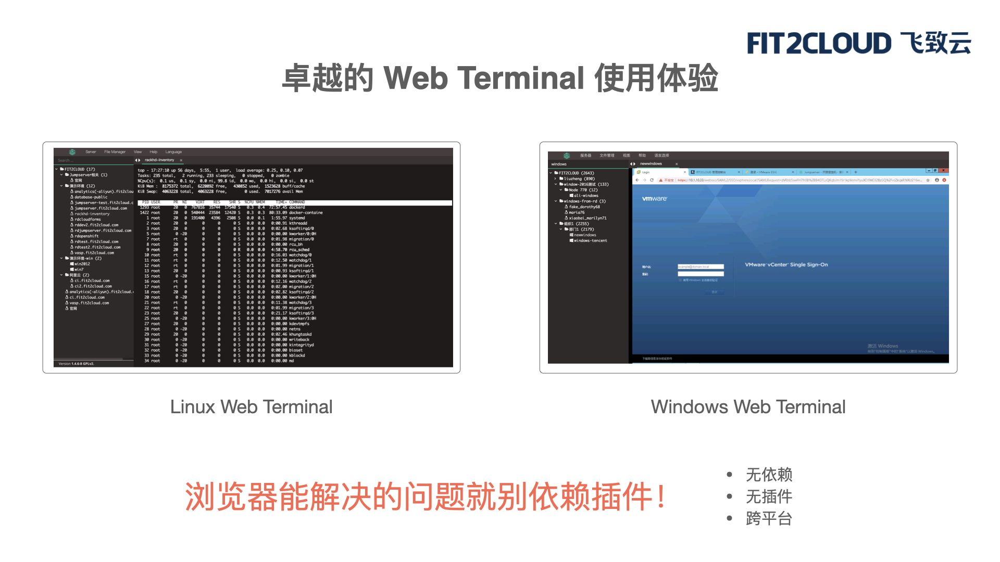
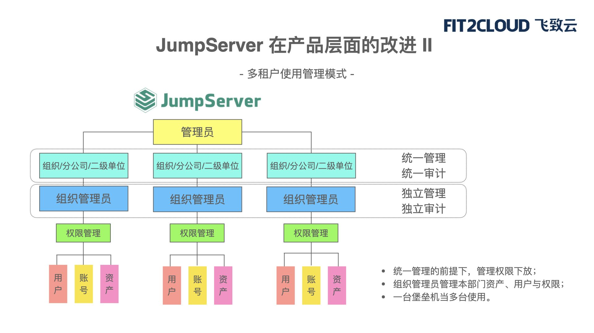
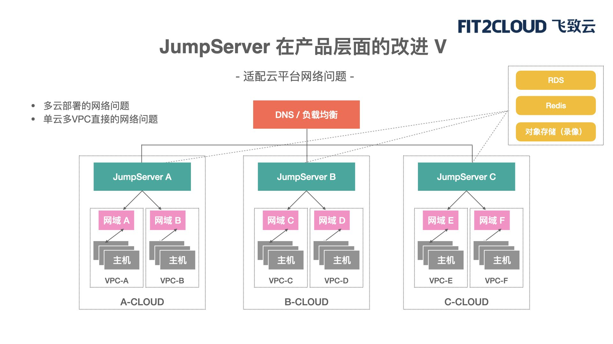
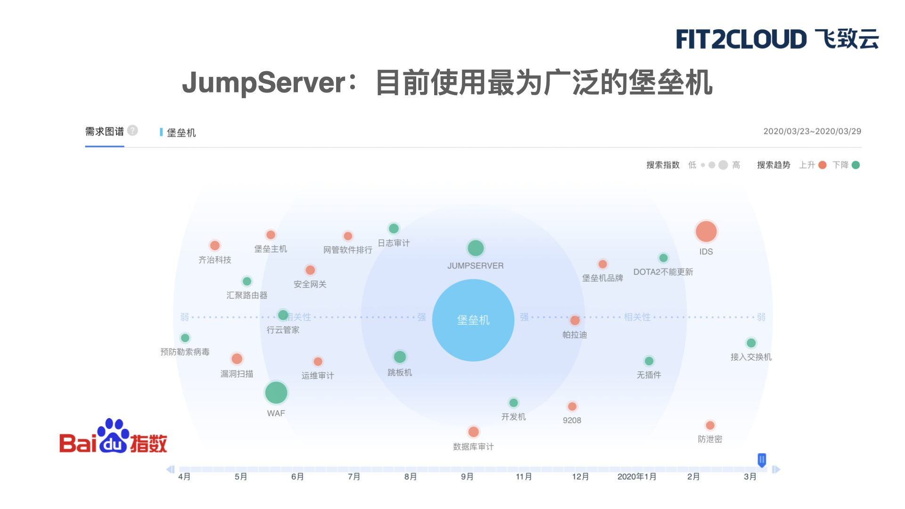

编者注：以下内容根据FIT2CLOUD飞致云东区总经理徐桂林在4月22日“FIT2CLOUD飞致云在线讲堂”的直播内容整理而成。访问“直播回放”链接即可观看完整版直播内容。
大家好，今天我们直播的主题是《JumpServer为什么是多云环境下更好用的堡垒机?》。我们和大家分享的内容包括：
一、堡垒机的背景介绍
二、堡垒机面临的变革是什么?
三、JumpServer如何思考这些变革?
四、JumpServer的使命与期待
一、堡垒机的背景介绍
堡垒机的诞生这件事情可能业界有不同的说法，目前比较普遍的认知是认为在2005年堡垒机诞生了，也在这一年出现了支持字符运维审计，在此之前大家把它叫做跳板机或前置机。

2006年堡垒机进入了等保要求。堡垒机经历了比较大的变化，堡垒机变成了等保的强制要求，得到了大量的推广和普及。在这一年，堡垒机开始支持图形界面的运维审计，所谓“图形界面的运维审计”指的是以Windows为代表的图形界面。
2007年堡垒机加入了文件传输审计，上传/下载文件通过堡垒机也有审计记录。
2008年堡垒机加入应用访问审计，这个功能也是现在大家普遍使用的功能，不管是Windows资产，还是Linux资产的审计，也不仅仅是对下载文件做审计，而且还可以对目标资产的某个应用的访问和操作做审计。
2010年，堡垒机又开始涉及到SQL操作审计，堡垒机支持数据库SQL审计，所有的SQL操作都可以审计记录下来，可以做一些审计操作，阻断操作。
2011年的时候，堡垒机开始支持线上运维操作的审核，做什么操作需要对方去审核一下，看能不能操作。
从2005年诞生堡垒机垂直产品来看，到2011年，这七、八年的时间堡垒机的发展速度非常快，尤其是在等保要求的推动下，堡垒机每年都会有非常重要的功能诞生，并且持续加入产品里面去。所以，像等保以及安全合规要求在这段时间内快速推动堡垒机往前进。
看这个时间轴你会发现，到2011年之后我就没画什么东西了，我觉得这个也跟堡垒机目前的市场现状有很大的呼应。我们发现，进入到2010年代时，堡垒机不管从自身功能，还是用户的使用场景，以及用户体验上确实进入了发展相对缓慢的阶段。很长时间内堡垒机的商业市场也就那几家竞争，大家按部就班地使用那几类的产品。
但不幸的是，从2010年企业IT迎来了一个非常重要的变革，那就是云时代的到来。
在国外可能要更早一点，从2006年亚马逊开始运营AWS开始，到国内2010年阿里云开始对外服务，云时代进行了非常快速的迭代。在这个时间点堡垒机却按兵不动，好像保持了原来的状态。但实际上堡垒机所处的时代和周边的环境已经发生了巨大的变化，这些变化如果展开来说可以把它分成几个方面。
■ 堡垒机访问端
堡垒机有它的访问端，有它的目标资产，中间是软件，不管是从访问端还是目标资产以及堡垒机自身，其实都在发生变化。比如说在访问端，你用什么东西来访问堡垒机?在过去的十年里，泛客户端的现象非常普遍，不仅仅是台式机、笔记本来使用你的堡垒机，你的手机都有可能有堡垒机的访问需求。操作系统层面也会发生一些变化，原来客户端以Windows为主，现在Windows、Mac以及安卓、IOS这些系统都进入到用户日常使用堡垒机的场景了。
更为重要的是，“浏览器为王”成为这个时代最主流的一个变化。大家每天打开电脑，有多长时间是在浏览器内工作的?可能80%的时间都在浏览器内工作，通过浏览器内处理你的事务，做文档编辑，浏览信息，做软件操作，大部分的软件操作都是在浏览器内完成的，这时客户端已经发生很大的变化了。
■ 堡垒机目标端
目标资产同样也发生很大的变化。资产快速云化，尤其是非监管行业和非金融行业云化在加快进展。随着用户业务的快速拓展，面临一些安全合规的要求，用户发现他的资产越来越分散，在全国各地都会有资产，而不仅仅是全国就一个地方有资产，一个地方集中建设就完了。
另外是目标端资产的规模化。因为企业在做数字化转型过程当中，越来越多的企业经营阶段都需要依赖于IT。原来可能IT很小，仅仅是企业整个经营链条当中很小的一块，但现在已经遍布整个经营链条，所以这必然导致数字资产的快速膨胀。
■ 堡垒机自身
堡垒机访问端和目标端在快速的变化，堡垒机自身的软件架构以及软件适配的周边环境也面临着变化。分布式架构催生出大量非常优秀的软件，同时各种成熟的公共服务也在出现。我们看到堡垒机所处的环境在过去十年内发生了巨大的变化，在这个时候我们必须要去思考一个问题——面对所处环境的变化，我们是需要一个更好的“斧头”还是一个更高效的“电锯”呢?
斧头和电锯最大的差别在哪里?最大的差别是驱动力发生了变化。斧头的驱动力是人力，电锯的驱动力是电力，这显然是两个不同的时代。
对应到堡垒机也是这样的。堡垒机在2005年诞生，到2011年这个阶段，你会发现驱动堡垒机快速往前进展的其实是来自于用户的等保需求，以及用户的应用安全审计需求。进入2010年代之后，你会发现驱动堡垒机再往前走的动力已经发生了很大的变化，反而变成了它所处环境的变化，有来自云化的变化，有来自用户资产快速膨胀的变化，有来自软件发展的一些变化。可以看出驱动力在发生变化，所以我用了这个比喻——我们需要一个更好用的“斧头”还是一个更高效的“电锯”?
正是基于这样考虑，2017年FIT2CLOUD飞致云和JumpServer走到了一起。JumpServer从诞生第一天开始就是一个非常优秀的堡垒机产品，它也得到了非常好的社区发展和支持，有很多人来使用。尤其在拥抱软件发展趋势这方面做的非常好，诞生第一天就很好。

FIT2CLOUD飞致云作为中国领先的多云管理平台软件及服务提供商，我们对用户使用云以及怎么样和云适配有非常深入的理解。我们两家走到一块，强强联手，希望给用户打造一个在多云环境下更好的堡垒机。
在回顾堡垒机发展历史的时候，我们发现，到2010年代之后，堡垒机的发展原来动力好像变得不是那么足了。与此同时，多云时代反而催生了极强的变革，给堡垒机带来很多的挑战。接下来我们跟大家分享一下堡垒机所处环境的挑战到底是什么?这些东西给传统堡垒机的解决方案带来的挑战有什么?
二、堡垒机面临的变革是什么?
堡垒机面临的变革包括目标基础设施的变革、软件新技术的变革，以及软件研发交付模式的变革。
过去这些年，堡垒机所处的环境发生了巨大的变化，堡垒机从中能不能受益?我觉得要从几个方面去理解云时代给堡垒机带来的变革。
首先从目标基础设施的变革说起，这个可能是最直观，也是对大家冲击最大的变革。我们发现，在过去的十年内，不管是用户所拥有的资产，还是用户需要访问堡垒机的人员都在快速增加。2010年初，一家公司有1000台资产其实已经很大了，大部分的可能只有50台、100台或200台的资产。但现在随便一家名不见经传的互联网公司或制造业企业，即使是你觉得非常传统的制造业，IT的规模可能就已经过千台、甚至万台的资产，我们有些客户IT资产已经上十万台了。
资产快速增加，同时因为IT不断地嵌入到用户生产链条的每个环节，原来可能就是做办公支持，但现在从供应链开头到客户端的销售都需要涉及到IT资产的访问，带来的问题就是需要通过堡垒机访问目标资产的用户也在快速增加。
在这种场景下，传统堡垒机给出了解决方案，一般来说就是原来一部分资产和人一套堡垒机，现在可能好多资产好多人，那你就做好多套。这也是很自然的解决方案，它可以工作，也带来很多现实的挑战。
1、部署的成本快速增加;
2、授权的成本也在快速增加。不管是套数增加，还是在目标资产的授权都在快速增加，对用户来讲形成了很大的成本压力;
3. 管理成本在快速增加。每一套堡垒机是独立存在的。作为独立的孤岛，里面的目标资产管理、授权管理、用户管理都是相互独立的，没有一个视角可以看到公司里面所有的资产，甚至我们看到有些客户在不同网段部署独立的堡垒机。你可能有20个网段，你要部署20个堡垒机，管理的成本是很大的。
另一件事也在同步发生，相信很多朋友会有真切的体会。原来一个企业依赖IT的链条非常短，很多时候他在依赖IT那个点来部署数据中心或同城部署主从灾备就结束了，这样数据中心相对集中，数字资产也相对集中。
但现在随着用户整个业务链对IT的依赖越来越增加，随着用户业务的扩张，其基础设施和IT资产也在快速扩张。他可能在全国有很多分公司，每个分公司可能都会有一个非常小的边缘节点，这个边缘节点都会需要一些资产去管理。

这个现象出现以后，最直观的传统堡垒机解决方案是这样的，每个边缘节点可能去部署一套堡垒机，或者说相对靠近的节点部署一套堡垒机。这样一来，资产规模快速增加时会带来一系列问题，比如集中管理难度增加，跨区访问的效率非常低，部署成本、授权成本都在增加。从这里可以看出，不管是从绝对数量和分布上，基础设施都会给堡垒机带来一些新的挑战。
除了上面的两个挑战外，还有第三个挑战。这就是用户越来越多的资产上云，也就是广泛云化了。因为资产是堡垒机管理最主要的对象，一旦资产已经发生了云化，我们再回头去看堡垒机资产管理的方式。
堡垒机资产管理的方式有几个重要的点，一是资产发现。传统堡垒机是输入进去，或做得好的堡垒机可以Excel导进去，或者说通过IP扫一下，这是传统堡垒机资产的发现;
二是资产纳管。所谓“资产纳管”是说这20台归这个项目，那20台归另外一个项目，分门别类，传统堡垒机在资产管理时基本上都是手动做;
第三，堡垒机资产重度依赖于网络。在云时代因为网络的复杂度，尤其是还会面临多云环境，传统堡垒机直通网络的部署方式在云时代面临很大的挑战。云时代的资产分布在不同云上、不同的VPC、不同子网下面，堡垒机对它们的管理是不是能做到更好地适配?这些挑战是在主机时代诞生的堡垒机不曾遇到的问题。我们应该思考这个问题，堡垒机从产品层面能否帮助用户做得更好?
随着资产的云化不断深入发展，我们发现，云给资产带来可编程基础设施。在这种情况下，堡垒机对资产的管理是不是能做得更好?我们能不能通API来自动发现资产?能不能通过API获取资产的一些元数据?这些元数据能帮助我们分门别类。比如说IP、名字、标签、操作系统之类的东西，这些我们都可以通过API获取到。
再看一看软件在过去十年的变革所带来的新变化。堡垒机本质上是一套软件，不管它是软件交付给你，还是以一体机的形式，它本质就是软件。在过去十年里，如果我们去看软件体系架构的变化，最主要的趋势就是从产品一体化架构向分层解耦架构的转变。这个变化可能在术语上有很多的说法，以前叫分布式，现在叫微服务，继续往前走可能变成无服务器架构，但都是快速地从传统一体化的架构向分层解耦架构在走。这样会带来什么好处?显然一旦分层解耦了，每一层都可以做水平扩展，你也可以更容易地部署了。
分层解耦还带来了越来越专业的外部工具产生，数据库层面有MySQL，缓存有Redis。分层解耦之后开始还没有这些公共组件的时候大家还是自己写缓存，我原来在十年前就干过类似的事情，但现在有太多这样的开源产品，公有云厂商也出现了各种各样的公共组件。随着软件的架构的分层解耦推进，你可以非常容易地复用这些能力。
作为一款软件产品，堡垒机是不是也应该往这个方向努力?是不是也应该更好地复用外面的这些公共组件来给我们用户提供更好的服务呢?这也是从软件创新的角度，尤其是从软件创新的后端来看。
从软件创新的前端来看，我们会发现特别有意思的一件事情。过去十年软件创新在后端不断迭代，从一体化走向分层解耦，前端的迭代也绝对不弱，现在已经诞生了非常专业的前端工程师这个职位，而且这个职位的体量在中国是非常巨大的。
非常不幸的一件事情是，尽管我们的前端技术已经从最开始的静态页面经历YUI、EasyUI、Angular JS，到现在非常主流的VUE，甚至还有更新的框架出现，但是我们现在在市面上看到很多的堡垒机厂商提供的堡垒机仍然是上个世纪的界面，还不是2000年代之后的。
JumpServer诞生在2010年代之后，诞生的第一天我们就非常注意用户体验，在很早的时候就推出了基于Angular JS的全新界面。这个界面推出已经有四五年时间了。2020年年中，JumpServer将推出全新的基于VUE的UI，也希望大家尽情期待这个改进。
软件创新在前端的变化确实能给我们的用户带来更好的体验，颜值更高的堡垒机产品。线下很多朋友如果是做运维操作的，你可能每天到公司里来，一天8个小时上班时间，大概有4个小时会使用堡垒机界面，一个清爽、好看、操作友好的界面给你带来的工作体验肯定也是不一样的。如果你每天对着的还是上个世纪那个界面，你可能自己就会觉得有点怪怪的，我觉得这也是软件创新给堡垒机带来的一些东西。我们认为，堡垒机软件应该积极拥抱这个变化，积极采纳这个变化，给我们客户带来好的东西。
接下来讲一下软件在交付模式发生的变化，过去十年大家都知道是软件交付模式发生巨大变化的十年。这里面列了几点：
第一，关于产品的获取;
现在几乎所有的产品获取都可以通过线上来完成，不仅是软件类产品，甚至一些硬件类的产品都可以在线上预定快递到你家去试用。但你会发现，堡垒机这个行当特别有意思，即使要试用也得去找供应商，给你弄一台服务器，然后上架，这个过程极其复杂冗长。堡垒机的使用真的应该这样吗?是不是能够变得更方便一点?
第二，关于产品的迭代;
我见到不止一个客户跟我反馈，他买了一台堡垒机，上架之后三年从来没有更新过，就放在那里。我们很难想象今天一套软件产品放在客户那里三年都不做任何更新，这样做真的对吗?其实我们已经进入软件快速迭代交互的时代了，从软件生产到最终软件在数据中心上线，流水线已经变得极其顺畅了。但是，堡垒机却仍然还保留着传统物理世界的模式在做产品迭代。
第三，关于系统集成;
用户越来越期待把用户数据中心内的各种各样的工具链打通，尤其像堡垒机这样每天都在用的工具打通很重要。但有些堡垒机厂商提供的就是一个黑盒，只能通过他们自己的UI界面去登录操作。没有API或API非常少，仍然是保留了很老的API风格，也不是主流的API的方式，用户做集成是非常困难的。其实，不需要让堡垒机变成又一个黑盒，我们需要改变这些，需要拥抱互联互通的数据中心新世界。
以上这些都是我们看到的一些真真切切的变化。面对这些变化，不管是基础设施层面，还是软件架构、软件研发还是交互方式层面，JumpServer是如何来思考这些的问题的呢?JumpServer如何进行变革的呢?为什么我们说JumpServer是多云环境下更好用堡垒机?我觉得，最核心的认知是，针对这些变革JumpServer做了更好的改变，我们更好地适应了多云时代的需求，所以我们认为它在多云时代会是一款更好用的堡垒机。
三、JumpServer如何思考这些变革?
面对这些改变，JumpServer从产品、运营和商务层面做出了自己的思考。
1. 产品层面

JumpServer从诞生第一天就基于分层解耦架构。在这张图上我们列出了JumpServer的分层架构，从最下面录像、日志、审计数据，到MySQL元数据的存储，Redis做缓存，中间的CORE是做核心鉴权、资产管理。上面作为接入端，Linux可能用KOKO，Windows用GUA，再上面是负载，它的每一层都是解耦开的。比如说接入端是可以做水平扩展的，解耦之后我们可以把它做容器化部署，也可以放到你的Kubernetes容器平台里面去跑。
分层解耦的架构给我们带来了什么样的好处呢?
首先，我们之前一直说用户资产特别多，原来可能就20个人用，10个并发，30个并发，200台、500台资产。现在可能动不动一个用户就有2000台、3000台甚至上万台的资产，几百人用，并发可能上千。传统的堡垒机肯定是抗不住的，采用分层解耦架构后，你会发现所有堡垒机负载的压力在于接入端，是连入资产的终端，不管是KOKO还是GUA。
这层我们解耦开了，我们可以把接入端做水平扩展，一个KOKO能支持200个并发，如果说你现在需要500个并发，我就部署3个节点接进来，把它连到核心就可以了。不管用户资产有多大，授权多少，其实都在核心里面。如果不是分层解耦架构，你会发现很难在这一点上做扩展，分层解耦架构之后这点扩展就非常容易了，这是针对资产多、大并发的场景。
针对资产非常分散的情况下，因为我是一个分层解耦架构，我可以把接入端和核心端完全分开来部署。比如说你是一家总部在深圳的公司，你就把JumpServer的核心资产和授权管理部署在深圳的JumpServer这边。你所有的数据中心需要接入到这里，在本地部署接入端，这里写的是Proxy，实际上就是接入端。把它连接到你的中间鉴权节点，这样的话就做了统一管理、统一认证，包括录像和存储都是放在你深圳的总部的。
当要访问本地的资产时，首先到JumpServer在深圳的核心节点做鉴权之后告诉是否可以访问，但一旦告诉可以访问之后，其实就是在本地连我本地的接入端，再到本地资产。
比如说我是上海的分支机构，我的机构想访问上海的资产，我就没必要像传统堡垒机那样，所有的链路是从上海去深圳，再从深圳回到上海，没有必要。我只想问一下从上海到深圳能不能访问资产?可以了以后，所有的就可以通过上海本地的接入端连接上海的资产，这样就可以做到即使是很分散的资产仍然能做到统一管理、认证、存储，但同时仍然是就近访问。这都是分层解耦架构带来的优势，如果没有分层解耦架构的存在，这些事情都没办法落地。
上面提到的JumpServer架构优势体现是在后台。前面我们提到了“浏览器为王”，传统的堡垒机当你要访问资产时基本上都是通过客户端来访问的。我们说了在“浏览器为王”的时代，我们有没有提供一个纯浏览器的访问方式?传统堡垒机也是通过浏览器访问资产，但它需要访问资产的时候基本上调用浏览器里面的插件，本质上是插件调用本地客户端来做的。
JumpServer从诞生第一天就有一个独立的层叫LUNA层，这也是传统堡垒机所没有的。传统堡垒机有接入层，LUNA层做了一件事情，就是让普通用户可以利用纯的浏览器，不需要任何插件，就可以像传统客户端一样地访问目标资产，不管是Windows界面，还是字符界面，这个体验的改善是非常大的。
这也得益于浏览器技术在过去十年的快速提升。作为堡垒机软件的供应商，我们应该快速地使用这个能力，尤其是我们这么多的用户已经开始习惯于每天用堡垒机来访问各种各样的东西。尤其是越来越多的非IT用户需要去用堡垒机访问一些东西的时候，你要让他们在浏览器里安装一个插件或者让他装客户端其实挺难的，尤其是在疫情期间。你要远程指导一个财务人员安装一个IE浏览器的插件再访问后面的某一个软件，是非常痛苦的。但是你要是告诉他给你个URL连接就可以访问了，哪个体验好是显而易见的。我觉得这都是JumpServer为了适应这个时代所做出的一些改变。

这里给大家展示的是通过PC、Mac电脑、台式机浏览器访问目标资产的界面，左边是字符界面，右边是一个Windows界面。我上面写了一句话——“浏览器能解决的问题就别依赖插件!”。毕竟前端浏览器已经为王了，浏览器是用户最主要的入口，我们希望在浏览器里解决问题。但我们也不是说完全抛弃了传统的方式，所以在前面大家也看到了我们仍然保留着传统客户端的登录方式，只不过我们提供了一个更友好的方式。
随着浏览器的访问体验出现之后，我们发现把浏览器的体验移植到移动设备比客户端容易许多，你要把XSHELL弄到手机上去，弄到安卓、IOS的系统那很累，但浏览器不一样，因为浏览器是业界公认的东西。
JumpServer在产品层面的第三个改进是——多租户使用管理模式。这一点也是云时代的一个特征。进入云时代之后，尤其是进入SaaS时代之后，我们发现大家都拼命地讲多租户，最本质的问题是希望一套系统可以由多个人来使用。
在堡垒机场景下的体现是什么呢?比如你是一个很大的集团公司，你希望购进一套堡垒机给下面各分公司去用，你可能需要构建一个行业云，面向你的客户提供堡垒机服务。你可能自己是一个很大的公司，公司下面每个部门都希望有独立管理的权限，这时候显然就对堡垒机提出了多租户的要求，这是在传统堡垒机使用场景中很少遇到的。JumpServer因为是一个开源的堡垒机产品，同时在积极拓展一些商业客户使用，我们发现这个需求非常普及，也非常普遍。

JumpServer在2017年加入了多租户用户管理体系。假设集团分公司的场景，集团购进一套堡垒机，每个分公司可以有自己独立的分公司管理账号。他可以管理自己的资产、授权、访问、用户，总公司可以看下面所有分公司的用户、资产等，而所有的这些东西是由一套堡垒机完成的。
多租户模式的引入让JumpServer可以一套堡垒机当多套用，这也是一个很重要的云时代特征，也给我们的用户带来很多新的可能。你是集团分公司的模式可以用，是总部分支机构模式可以用，你是一个大公司IT部门和下面各个不同的IT子部门也可以这么用，给了你很多新的选择和可能，这也是一个很重要的改进。
下面分享一下JumpServer在云适配方面的改进。前面讲到，我们的目标资产已经云化了，JumpServer堡垒机可以给你自动同步这些资产，甚至可以按照你的元数据做分组，大大降低了日常资产管理的工作。而且同步之后堡垒机还可以定时更新你的资产信息，有API每天都会同步一遍，每天都会更新看有没有变化。你在这台机器有些别的变化我也给你同步下来了，资产管理完全通过API来解决。所以我们讲“API能解决的问题就别动手!”，我觉得这也是对客户带来实实在在的帮助。
云适配不光是同步资产，堡垒机有一个很大的问题是录像存储。尤其是当你的资产特别多，访问特别频繁的时候，你的录像数据其实是很大的。虽然说JumpServer的压缩算法还是很可以的，在堡垒机里面算是领先的，但存储的量仍然是很大的。现在云时代来了，提供了非常好的对象存储系统，天生就适合存储录像的服务，我们为什么不把这些东西存到那上面去呢?好处体现在：
1、全托管;
2、几乎无限容量;
3、成本非常低;
4、自带完整的数据生命周期管理。
再讲一讲JumpServer在网络适配层面的改进。这里面画了一张图是说JumpServer怎么样去适配用户在多云、多VPC情况下的部署。

因为用户一旦上了公有云之后就很难像传统数据中心里二层或者三层网络打通，在公有云上网络的安全策略就是最小安全的原则，尽可能开少的端口和暴露面。JumpServer对此也做了适配，在多云环境，我们可能在每个云都会部署一套JumpServer的接入节点，所有的鉴权、缓存和存储都是集中的，在每个云上有不同区域的不同VPC利用网域功能加进来，这样的话就可以尽可能少地暴露端口出去，尽可能少地暴露你的点出去。
JumpServer可以做到在不同云上的访问到达，不会影响你的体验，这都是JumpServer在云时代的一些改进。我们觉得这些都是实实在在用户面临的问题，这是在传统主机时代堡垒机很少遇到的问题，但现在用户就面临着这样的问题，作为堡垒机的创新产品我们也应该往前走一走。
接下来谈谈JumpServer在运营层面的改进。最好的产品如果没有好的运营，客户也很难受益。JumpServer从诞生第一天就基于开源的模式，代码托管在GitHub上，现在已经接近13000个Star，是开源堡垒机第一品牌。FIT2CLOUD飞致云在2017年收购JumpServer，大家当时可能有个担心，说会不会把它变成闭源?但显然我们收购JumpServer绝对不是要把开源变成闭源，这显然是逆潮流的行为，我们会持续地运营开源产品。
我们认为，不应该忘记JumpServer创立的初心，就是给尽可能多的人提供一个好用的堡垒机，这一点我们是非常坚定的。JumpServer加入FIT2CLOUD飞致云之后两年多时间，70%多的研发功能仍然是以开源版本提供给客户的。我们希望，让用户在不花一分钱的情况下就可以拿到一个足够好用的版本。这个版本可以满足他日常各方面的需求，而且也适应了现在大部分的一些场景。这一点是我们一直坚持的，过去、现在和未来都会这么做，我们不会放弃开源版本的推广。到目前为止，JumpServer开源的版本下载部署的次数已经超过30000次。
在运营层面，我们还坚持采用快速迭代的方式。JumpServer加入FIT2CLOUD飞致云两年多已经发布了20多个版本。今年开始基本是按照每月一个版本的节奏在对外发布版本。我们不希望客户用了JumpServer之后三年不更新。三年很多东西都变化了，凭什么一个堡垒机软件不变化?用户三年内面临很多新的问题，这些新的问题难道就应该忽略掉，让用户每天去忍受吗?软件产品肯定是有Bug的，难道不应该及时被修复吗?这些都是我们在运营层面上考虑的，也是我们为什么坚持按月迭代的一个原则。
最后讲一下我们在商业层面的考量。我们做了一些JumpServer的商业化工作，而且取得了非常不错的商业化结果，这些商务层面的考量都是在不违背JumpServer初心的前提下展开的。在商业层面我们采用了两个非常重要的手段：
1. 软件订阅模式
大家按年来付钱给我们，不是一次性买断放在那里。
2. 海量资产授权
我们给用户一个非常大的资产上限。
这两个方式背后思考逻辑就是用户在云时代资产的两个特征：
首先，资产的弹性波动非常大。平时可能100台资产，到“618”的时候变成200台资产，“双十一”的时候变成500台，让用户一台一台地数资产是一件很残酷的事情。
第二，用户的业务在快速迭代向前发展。今年是这样，明年可能是另外一个规模。我们给用户足够低的成本来启动，用户只要付一年的钱，以很低的成本就可以使用上一个很好用的堡垒机。
在提供优质服务的前提下，我们希望通过这两种手段来大幅度地降低用户使用堡垒机的商业成本。
以上是我们做出的变革，也是JumpServer产品遵循的原则。这包含了JumpServer研发团队的努力，还包括很多社区用户给我们的反馈。开源产品用户给我们反馈共同打造产品，这是令我们非常欣慰的一件事情。我们针对云时代在思考变革、行动，给用户提供了一个非常好用的产品，这也是为什么我们一直说“JumpServer是多云环境下更好用的堡垒机”。
四、JumpServer的使命与期待
最后做一个简单的收尾，谈谈JumpServer的使命与期待。
JumpServer的使命是什么?老广(JumpServer项目创始人广宏伟)创立JumpServer第一天的时候构思的使命是什么?这个使命就是——“成为最为广泛采纳、更好用的堡垒机”。FIT2CLOUD飞致云和JumpServer合并之后，我们没有改变这个使命。
第一，JumpServer已经是一个被广泛采纳的堡垒机。在JumpServer之前，堡垒机是一个相对专业的领域，只有少数能够使用的企业，甚至是有很高的成本才能使用起来的。因为JumpServer的出现，你会发现一个新成立公司在有很少资产的情况下就可以使用JumpServer的开源版本了，我们把它变成一项普惠的技术推到所有的客户面前;
第二，我们希望JumpServer是一款更好用的堡垒机，是在云时代更适合用户实际需求的堡垒机。这个“更好用”是一个持续往前走的状态，下一个时代可能有下一个时代“好用”的定义。

这里放了一张图，这张图是百度指数的需求图谱。中间一个蓝色的大圈是堡垒机三个字，离这个圈最近的表示关联度越高。JumpServer是离它最近的，意味着通过百度的大数据分析得出的结论，当用户在百度输入“堡垒机”三个字时，绝大部分用户最想找到的结果其实是JumpServer。
从某种程度上，这已经说明了“堡垒机=JumpServer”这个说法已经变成大家默认的认知了。这是一件对我们来讲很欣慰的事，确实可以看得到JumpServer在被广泛地采纳和使用，这也是我们使命中的一部分。
我们将坚持这样的使命往前走，非常期待大家能够参与进来。我们希望，JumpServer能够成为你职业生涯的第一台堡垒机，这是我们的口号。你可能觉得我用了很多堡垒机，JumpServer根本不是我职业生涯使用过的第一台堡垒机。但我想说的是，你可能使用过很多堡垒机，但它不一定会成为你的堡垒机。“你的堡垒机”我觉得至少要满足两点：
第一，不管在哪家公司工作都可以获得它，不会因为财务和公司变化而变化;
第二，对这个堡垒机所拥有的技能会随着你的职业生涯的任何地方都可以使用到。
这是JumpServer希望达到的目标，我们也在为这个目标不断地努力。在这个过程中我们也非常欢迎大家来使用JumpServer的开源版本，我们会坚持提供功能完整的开源版本，同时也欢迎大家加入到JumpServer的项目建设当中，不管是提需求、Bug或在社区里回答别人的问题，都是一件非常好的事情，你也可以分享一下使用JumpServer的体会。
如果说你在一些商业场景下希望得到更好的商业支持，也欢迎联系我们，我们可以提供非常专业的服务团队，从实施、安装、部署、紧急救援等方面提供相应的商业支持，让你在真正的大规模生产使用过程中没有后顾之忧。
前面讲了堡垒机的过去、现在和面临的挑战，堡垒机的未来会是什么样的呢?
IT是一个高速发展的行业，一切都在快速变化。堡垒机是诞生在主机时代的，现在已经进入云时代了，下一个时代是什么时代?
云时代的下一个时代是容器时代或无服务器时代?在无服务器时代服务器是没有的，下一个时代堡垒机会长成什么样?
我觉得这也是非常值得大家思考的事情，坦率说到目前我们还没有答案，我们也在不断地摸索。但有一点我们坚信，只要有运维审计、运维操作的时代就一定需要用到操作审计，哪怕那时候它已经不叫堡垒机了。
希望大家在未来继续支持JumpServer，积极地为社区做贡献，我们也肯定会持之以恒地在JumpServer社区发展上投时间、精力和资金，让JumpServer真正践行它的使命——“多云环境下更好用的堡垒机”。我们将继续为大家提供更好的产品，让大家在云时代拥有一个称心实用的堡垒机。